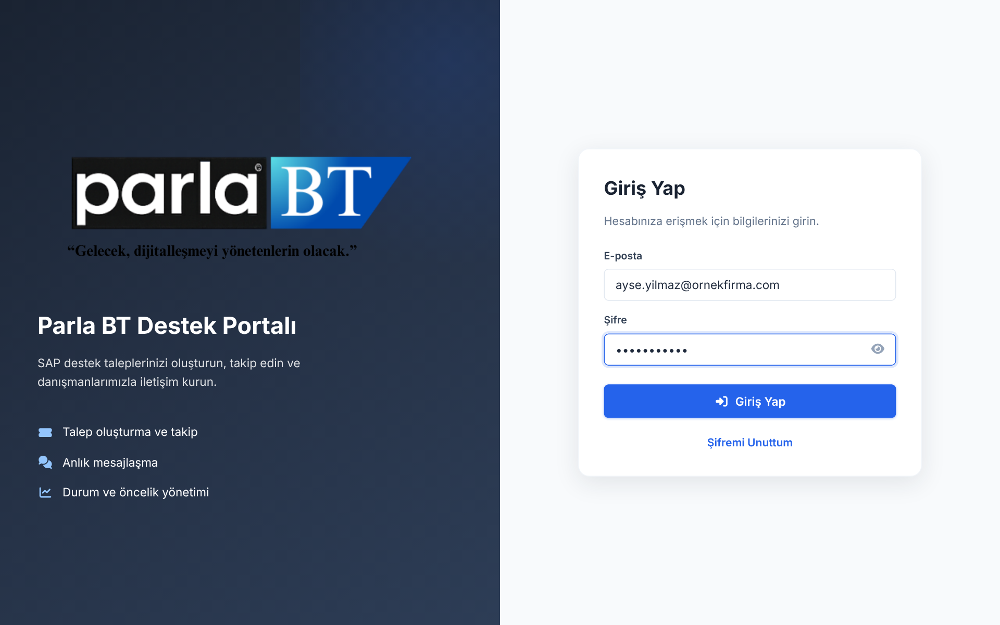
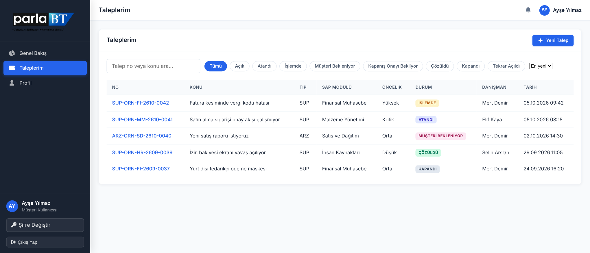
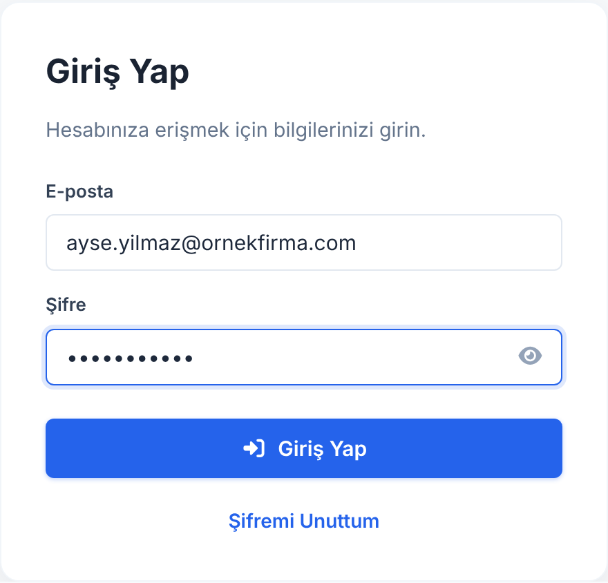

Destek Portalı'na tarayıcınızdan erişirsiniz; ayrıca bir program kurmanız gerekmez. Hesabınız Parla BT tarafından oluşturulur ve bilgileriniz e-posta ile size iletilir.
Tarayıcınızın adres çubuğuna portal adresini yazın veya e-postadaki bağlantıya tıklayın. Giriş formu sayfanın sağında görünür.
E-posta alanına kurumsal adresinizi, Şifre alanına size iletilen geçici şifreyi yazın. Şifreyi görmek için gözü simgesine tıklayabilirsiniz.
Giriş Yap düğmesine tıklayın veya Enter tuşuna basın. Kısa süre içinde sayfasına yönlendirilirsiniz.
İlk girişte geçici şifrenizi değiştirmeniz istenir. Yeni şifre en az 8 karakter olmalıdır.

1 2 3 4Giriş yapamıyorsanız önce Caps Lock tuşunun kapalı olduğundan emin olun. Şifre büyük/küçük harfe duyarlıdır.
Şifrenizi kimseyle paylaşmayın. Parla BT çalışanları sizden şifrenizi hiçbir zaman istemez.
Her talep, çözüme kavuşana kadar sekiz durumdan geçebilir. Durum, talep listesinde ve talep ayrıntısında renkli rozetle gösterilir.
| Durum | Ne anlama gelir? | Sizden beklenen |
|---|---|---|
| Açık | Talebiniz alındı ve sıraya girdi. | Yok |
| Atandı | Bir danışman talebin sorumluluğunu aldı. | Yok |
| İşlemde | Danışman talep üzerinde çalışıyor. | Yok |
| Müşteri Bekleniyor | Çözümü denemeniz veya ek bilgi vermeniz gerekiyor. | Yanıt verin |
| Kapanış Onayı Bekliyor | Çözüm tamamlandı; kapatılması için onayınız bekleniyor. | Onaylayın |
| Çözüldü Kapandı | Talep sonuçlandı. Gerekirse yeniden açabilirsiniz Tekrar Açıldı. | İsteğe bağlı |
Aciliyet düzeyini Düşük Orta Yüksek Kritik öncelik etiketleri belirtir. Üretimi durduran sorunlarda Kritik seçin ve ayrıca danışmanınızı arayın.
Talep formu portalın sağ üstündeki Yeni Talep düğmesiyle açılır. Aşağıdaki tabloda her alanın ne anlama geldiği özetlenmiştir.
| Alan | Ne yazmalı? | Zorunlu mu? |
|---|---|---|
| Konu | Sorunu bir cümleyle özetleyin. Örnek: Fatura kesiminde vergi kodu hatası. | Zorunlu |
| Talep tipi | Destek (SUP), arıza (ARZ), proje (PRJ) gibi kategoriler arasından uygun olanı seçin. | Zorunlu |
| SAP modülü | Sorunun yaşandığı modül: FI, MM, SD, HR vb. | Zorunlu |
| Öncelik | İşinize etkisine göre Düşük, Orta, Yüksek veya Kritik. | Zorunlu |
| Açıklama | Ne yapmaya çalışıyordunuz, hangi hata mesajını gördünüz? Ekran görüntüsü ve işlem kodu (ör. VF01) ekleyin. | Zorunlu |
| Telefon | Gerektiğinde size ulaşabileceğimiz numara. | İsteğe bağlı |
Küçük bir ipucu. Kısayol olarak Ctrl + K ile arama kutusuna gidebilirsiniz.
Talep numaraları TİP-MÜŞTERİ-MODÜL-YYAA-SIRA biçimindedir; örneğin SUP-ORN-FI-2610-0042.
Kapanmış bir talebi yalnızca kapandığı günden itibaren 30 gün içinde yeniden açabilirsiniz.
Kritik durumlarda yalnızca portala güvenmeyin: üretimi durduran sorunlar için danışmanınızı telefonla da arayın.
Metin içinde: Talebi Gönder Vazgeç Dosya Ekle düğmeleri; E-posta alanı; menüsü; Esc tuşu.
Sorununuzu ilgili modülle birlikte tek formda bildirin.
Danışmanınızla talep içinden yazışın, geçmişi görün.
Çözümü test edin ve kapanışı siz onaylayın.
Sözleşmedeki yanıt sürelerine tabidir.
Talepler saatlik ücretlendirilir; öncelik anlaşmalı müşteriden sonra gelir.

1 2 3
Şifremi unuttum, ne yapmalıyım?
Giriş sayfasında Şifremi Unuttum bağlantısına tıklayın; e-posta adresinize bir sıfırlama bağlantısı gönderilir. Birkaç dakika içinde gelmezse gereksiz (spam) klasörünü kontrol edin.
Talebimin durumunu nasıl takip ederim?
sayfasında her talebin rozetini görebilirsiniz. Durum değiştiğinde ayrıca e-posta alırsınız.
Kapanmış bir talebi yeniden açabilir miyim?
Evet. Talep ayrıntısında Yeniden Aç düğmesini kullanın; talep Tekrar Açıldı durumuna geçer.
| Terim | Açıklama |
|---|---|
| Talep (ticket) | Portal üzerinden açtığınız her destek, arıza veya proje isteği. |
| Danışman | Talebiniz için atanan Parla BT uzmanı. |
| SAP modülüFI, MM, SD ... | Sorunun ilişkili olduğu SAP uygulama alanı. |
| Öncelik | Talebin işinize etkisini belirten Düşük/Orta/Yüksek/Kritik seviyesi. |
| Kapanış onayı | Çözümün sizin tarafınızdan doğrulanması ve talebin kapatılması adımı. |